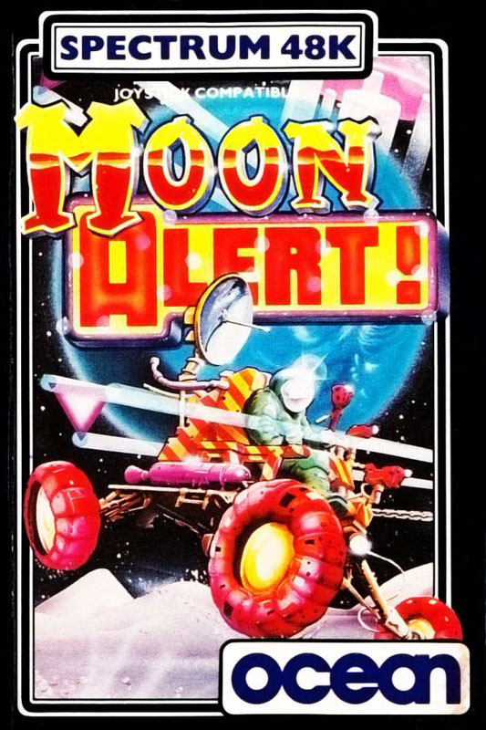
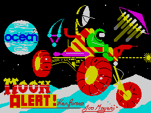
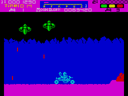

Moon Alert


{kind=link}

| Publisher: | Ocean |
| Price: | £5.90 |
| Year: | 1984 |
| Source: | CRASH, Issue 6 |

Ocean’s packaging and title screens have been delightful recently, and Moon Alert is no exception with the screen (designer D. Thorpe) being based on the cassette cover. The scenario for Moon Alert is a familiar one by now. What makes Ocean’s version interesting is that they have definitely based this on the moon, with the activity of the Moon Rova taking into account the effects of a reduced gravity field.

Space Fighter 7 has been blasted by the aliens and crash landed on the Moon’s surface. Fortunately the Moon Rova stored on board seems undamaged. It is equipped with bilateral photon canon and perpendicular jet boosters, both of which you will need to survive the long journey back to base. The aliens have located your crash site and are even now scouring the terrain for you.
As usual, your Rova travels from left to right against a scrolling background of mountains and a scrolling foreground of craters, whilst overhead, the alien craft drop bombs on you. The ground is divided into 26 sectors, lettered A to Z with Ocean claiming that over 300 screens are included in the game.
CRITICISM

‘In my opinion, Moon Alert is the best ‘Moon Buggy’ game I have seen. The graphics are smooth and the jumping over obstacles is excellent. There are many stages and the game is very playable. I liked this one, it has plenty of ‘feel’, so that jumping over canyons is not just a hit and miss affair. The keyboard positions are good and the graphics and sound are good.’
‘There have been several Spectrum versions of the “Moon Buggy” game now, and I think Ocean’s has been rather long awaited. But the wait is worth it. This is the best yet. Oddly enough, it doesn’t look very exciting at first. It isn’t violently coloured, just black, dark blue and purple with a pale blue line drawing of the buggy. The rocks are red and the explosions white. There aren’t all that many ground-based obstacles — at first, and the hovering aliens don’t cause craters with their bombs or lay mines in your path. So at first it looks pretty simple. But it’s not. This is a deceptive game, because it trundles along at what seems like a leisurely pace. But it has been designed just right, slowly leading you into impossible situations. I particularly liked the fact that terrain isn’t flat with craters. Here you have hills, humps, valleys, many of them awkwardly shaped so you have to time the jumps just right. Firing is nicely paced as well. The graphics are super smooth, leading you on into the growing horror. Suddenly there are triangular things in the air and they do make craters and double sized rocks in your path. I must get back and see what comes next. Highly addictive!’
‘Smooth graphics, good tunes and reasonable sound effects boosted with Currah combined with marvellous playability, make this the best “Moon Buggy” type of game yet for the Spectrum. If it isn’t entirely original, Ocean should get a good rating because of the original way in which the game has been implemented. I particularly liked the way each zone is sectioned off by letters of the alphabet which come scrolling into the screen as you drive over them. Loss of life means you go back to the start of the sector you are in, not the beginning — until you lose all your lives of course. Highly addictive and maddening to play.’
COMMENTS
| Control keys: | Alternate keys bottom row for left/right, keys on the third row for jump, keys on the second row for fire |
| Joystick: | Kempston, Protek, Sinclair 2 |
| Keyboard play: | Good positions, with plenty of options, very responsive |
| Use of colour: | Good |
| Graphics: | Smooth, well detailed |
| Sound: | Good tunes, plenty of incidental effects |
| Skill levels: | 1 but progressive difficulty |
| Lives: | 4 |
| Screens: | Continuously scrolling |
| Features: | 1 or 2 player games, Currah microspeech facility |
| Originality: | Hardly an original idea, but a good version of the arcade original, and particularly well implemented with imaginative features |
| General rating: | Very addictive, playable and generally very good. |
| Use of computer: | 86% |
| Graphics: | 89% |
| Playability: | 95% |
| Getting started: | 88% |
| Addictive qualities: | 94% |
| Originality: | 83% |
| Value for money: | 90% |
| Overall: | 89% |